St. Francis de Sales - Stations of the Cross
Stained Glass | Index | Holy Cross Chapel
There are fifteen renditions of the Stations of the Cross spaced around the walls of the sanctuary. Click any image for a higher-resolution version.

Condementation |
|
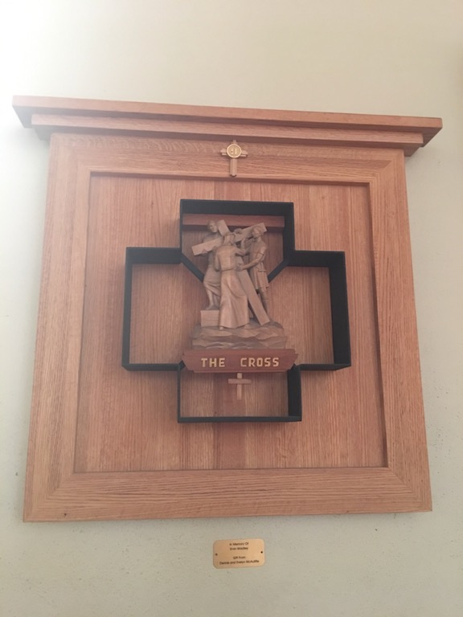 The Cross |

|
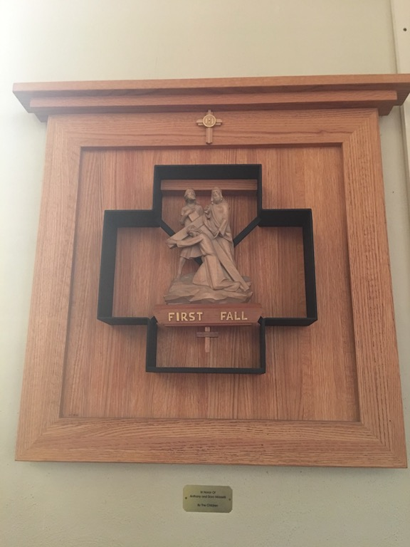 First Fall |

|
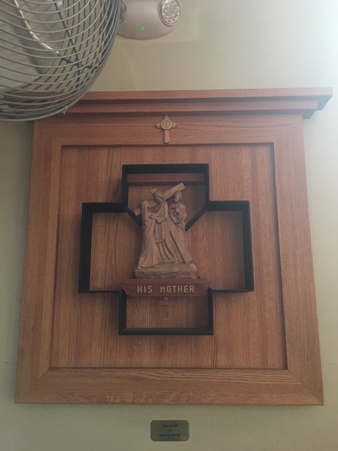 His Mother |

|
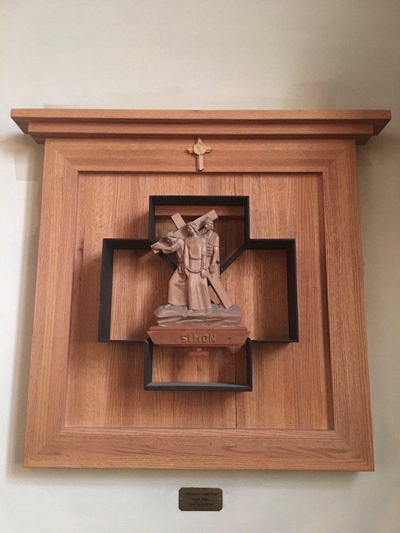 Simon |

|
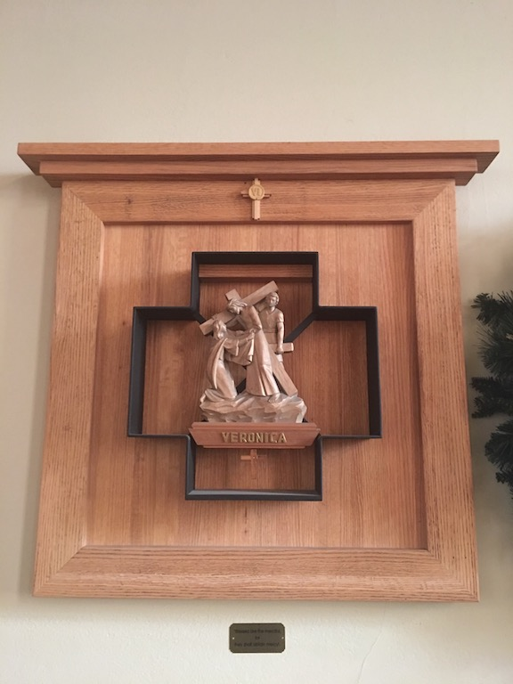 Veronica |

|
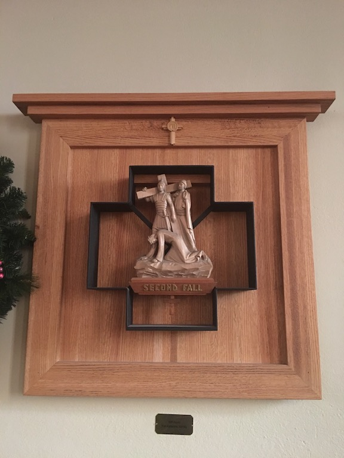 Second Fall |

|
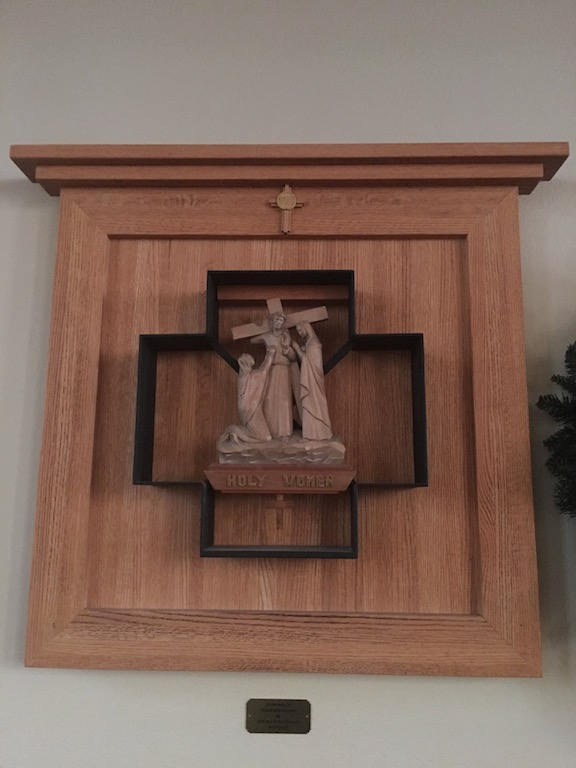 Holy Women |

|
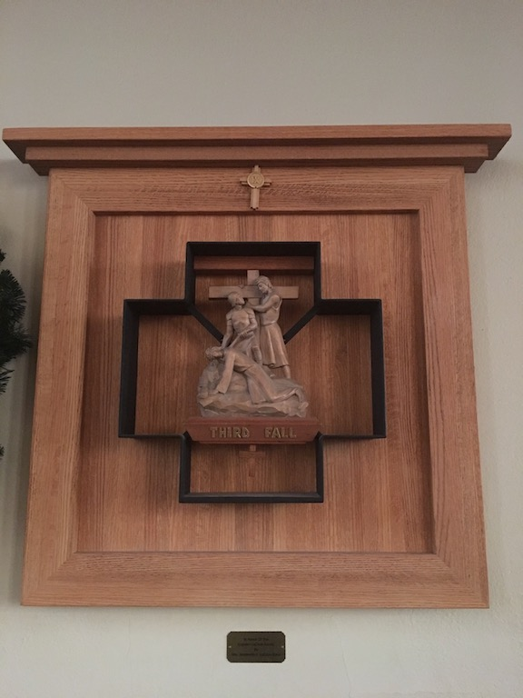 Third Fall |

|
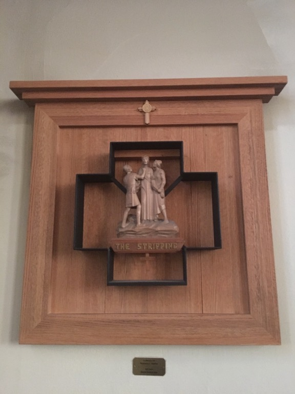 The Stripping |

|
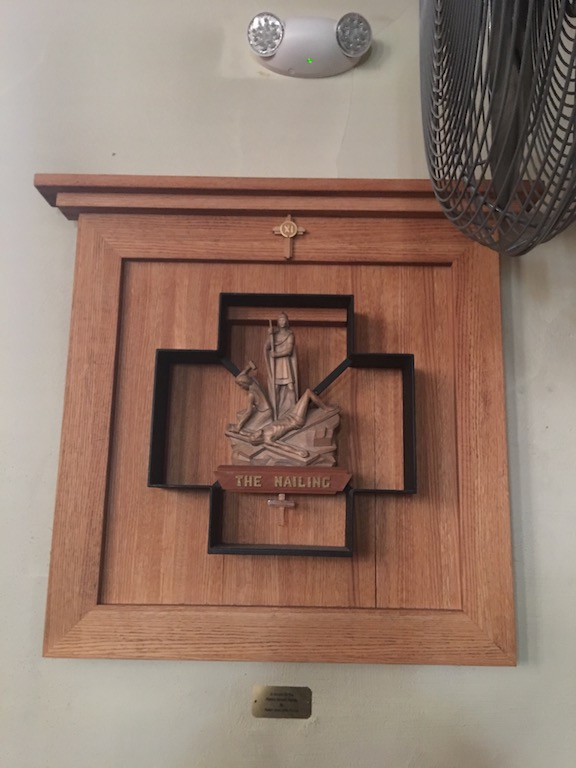 The Nailing |

|
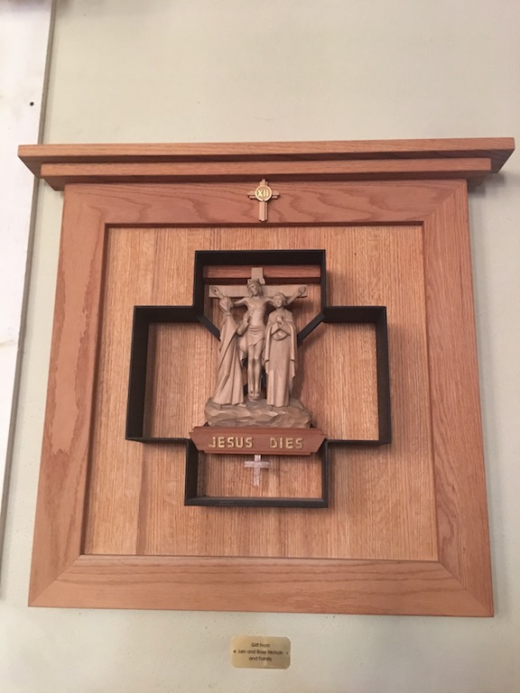 Jesus Dies |

|
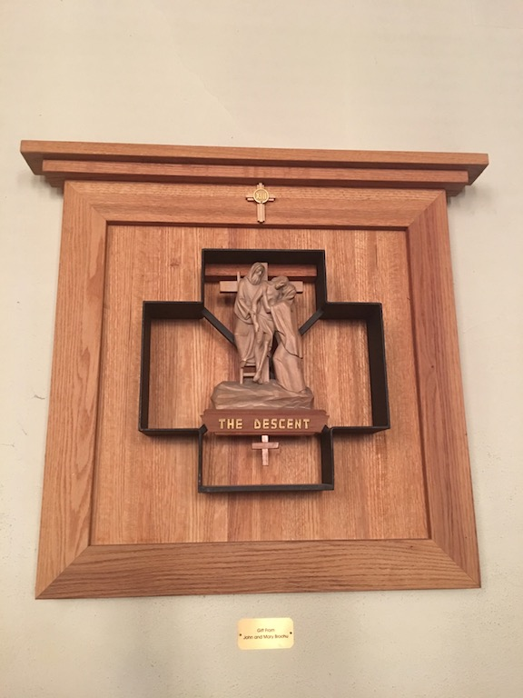 The Descent |

|
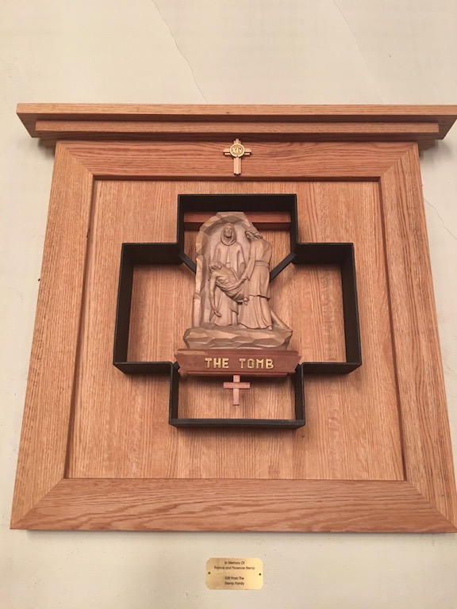 The Tomb |

|
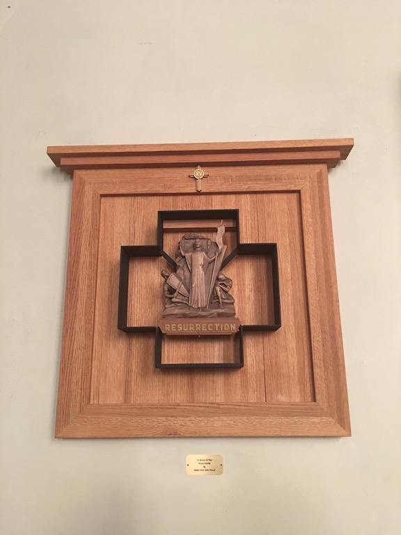 Resurrection |